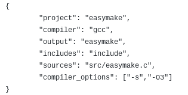

simple, lightweight and open-sourced alternative to Make or CMake.
EasyMake is a brand-new simple building system for all your C/C++ projects what makes it so great is it's super simple syntax.
And its incredible build time, it take seconds to build! along with its simple syntax its never been easier to make a build file.
along with this there is automatic builder for thoses who just dont want type. Its that simple!
In order to install it you have to compile it, but dont worry its really easy!
The source code can be found on github here
Its really easy to compile! (this is assuming you have gcc, you can find instructions for other compiler at the github and the wiki)
gcc src/easymake.c -Iinclude -s -O3 -o easymake
Here is an example of a simple EasyMake file.
You can also check this wiki here
